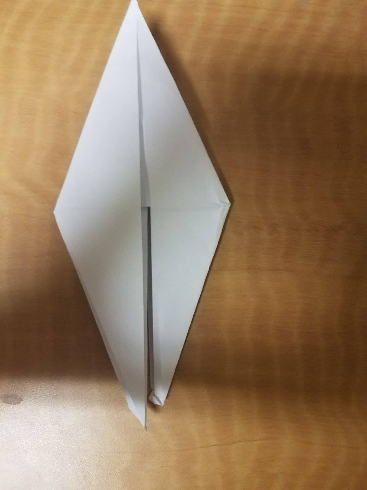
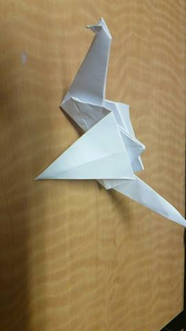

Project 2: Origami Crane
Difficulty: Hard
Estimated Time to Complete: 5-10 minutes
Materials: Origami Paper
Step 1: Start with a square piece of origami paper.
Step 2: Fold the paper in half. Be sure to use your nail to make a defined crease.
Step 3: Fold the resulting triangle in half by taking the left corner and folding it to the right.
Step 4: Take the top flap and open it, creasing the left and right sides so you can fold the paper corner to corner.
Step 5: Now turn the paper over and do the same thing to the other side.
Step 6: To do that, lift the left flap up like this picture.
Step 7: Grab the left and right side of the flap to open it up. Crease the sides so you can fold the top corner to the bottom.
Step 8: Take both sides of the top layer and fold them in to meet at the middle, then unfold.
Step 9: Now open the flap upwards.
Step 10: Fold the left and right sides inward.
Step 11: Flip it over and repeat steps 8 to 10. It should look like this when you're done.

Step 12: Take the upper layer of both sides and fold the lower parts into the center
Step 13: Turn the paper over and do the same thing to the other side.
Step 14: Take the right flap and fold it over to the left.
Step 15: Flip the paper over and do the same to the other side.
Step 16: Take the bottom flap and fold it over to the top
Step 17: Flip the paper over and do the same thing to the other side.
Step 18: Take the top layer of the right flap and fold it over to the left.
Step 19: Flip it over and do the same thing to the other side.
Step 20: Take the left and right pieces underneath the top flap and pull them apart. Crease the bottom of those pieces.
Step 21: Take one of those pieces that you pulled apart, and open the top corner so that you can bend a portion of it down to form the head. After bending a portion down, crease the sides of the head up so the piece will stay bent.
Step 22: Bend the wings down at a 90-degree angle and you are finished.
